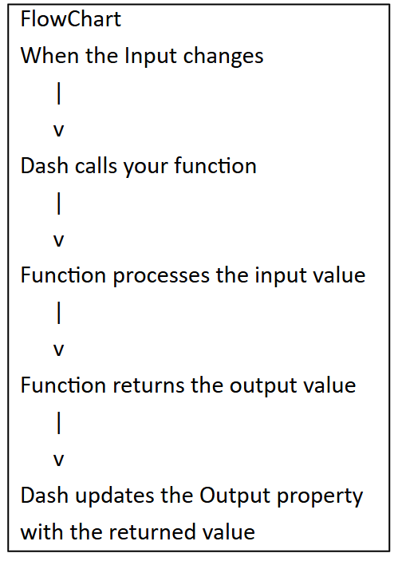
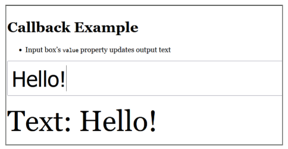

def function_name(inputs):
#body of the function
return outputsWriting Callbacks and Accessing API’s
- This module explains how callbacks make Dash apps interactive and how to connect them to external APIs. A callback function automatically runs when a user changes an input, such as typing text or selecting a date, and updates outputs like graphs or images in real time. Using the @app.callback() decorator, students learn to link inputs and outputs, handle multiple components, and structure interactive workflows with Dash Core Components such as dcc.Input and dcc.DatePickerSingle.
The lesson concludes with a hands-on example using NASA’s Astronomy Picture of the Day (APOD) API. Students build a Dash app that lets users select a date, retrieves NASA’s image or video for that day using the requests library, and displays the title, media, and explanation. Through this exercise, they learn how to combine callbacks, APIs, and conditional logic to create dynamic, data-driven dashboards.
Callbacks
- A callback function in Python is a function that is automatically executed (“called back”) in response to a specific event or change.
- In Dash (and similar frameworks), callback functions link inputs and outputs — when an input component’s property changes (for example, a dropdown selection or slider value), the callback function runs automatically to update the output component’s property (such as a graph or text display).
- These functions act as the “glue” between user interaction and dynamic updates in an app.
- Example (conceptually):
- “If the user changes the dropdown, automatically run the callback function to update the graph.”
Flow:
Input component’s property
Callback function(input) -> return output
Output component’s property
Callbacks in Dash: The Basics
Callback syntax
from dash import Input, Output
@app.callback(
Output(component_id,component_property), ##Decorator
Input(component_id,component_property) ##Decorator
)
def function_name(input_object): ##Function
'''''' ## body of the function
return output_object ##End of the functionIn Dash, a callback is a Python function automatically triggered when an Input property changes, updating one or more Output properties in your app.
The @app.callback decorator links Input(s) to Output(s). This special line tells Dash which component to update and what triggers the update.
The Inputs describes which component’s property will trigger the function when it changes.
The Outputs describe where the result will be sent (which component and which property)
component_id refers either to the id property or the variable name of the component.
component_property = one of the properties of the component (e.g., children of the html.Div figure of a dcc.Graph).
The Function

The function arguments match the order of the Inputs. The return value(s) match the order of the Outputs.
function_name(input_object) receives the value from the Input.
Inside the function, you process that value and create the desired output.
return output_object sends that processed output back to the Output you specified.
Callback syntax
from dash import Input, Output
@app.callback(
Output(component_id,component_property), ##Decorator
Input(component_id,component_property) ##Decorator
)
def function_name(input_object): ##Function
'''''' ## body of the function
return output_object ##End of the function
)Multiple Inputs and Outputs
Multiple Inputs:
You can pass several Input() objects to a single callback.
The function will run whenever any of those inputs change.
Multiple Outputs:
- Return a tuple/list with one value for each Output() in the order declared.
@app.callback(
[Output('graph','figure'),
Output('summary','children')],
[Input('dropdown','value'),
Input('slider','value')]
)
def update_graph(selected_category, slider_value):
fig=make_figure(selected_category, slider_value)
text= f"Selected: {selected_category}, Value: {slider_value}"
return fig, textUsing dcc
What is dcc?
dcc is short for dash.dcc, which stands for Dash Core Components.
It’s a module in Dash that provides interactive UI elements like input boxes, sliders, dropdowns, graphs, etc.
Callback Example

# callback_example.py
from dash import Dash, html, dcc, Input, Output, callback
app = Dash(__name__)
app.title = "Callback Example"
app.layout = html.Div(
style={"maxWidth": 900, "margin": "40px auto", "fontFamily": "Georgia, serif"},
children=[
html.H1("Callback Example"),
html.Ul([
html.Li(["Input box’s ", html.Code("value"), " property updates output text"])
]),
dcc.Input(
id="text-in",
type="text",
placeholder="type here…",
style={"width": "100%", "fontSize": "48px", "padding": "8px"},
),
html.Div(id="text-out", style={"fontSize": "64px", "marginTop": "20px"}),
],
)
@callback(Output(component_id="text-out", component_property="children"),
Input(component_id="text-in", component_property="value"))
def show_text(value):
return f"Text: {value or ''}"
if __name__ == "__main__":
app.run(debug=True)dcc.Input
What is dcc.Input?
dcc.Input is a Dash Core Component that creates an HTML input box inside your app.
It lets the user type in text, numbers, or other data.
The key property of dcc.Input is value — this holds whatever the user typed.
You can connect the value to a callback so that your app reacts instantly when the user types something.
app.layout = html.Div(
style={"maxWidth": 900, "margin": "40px auto", "fontFamily": "Georgia, serif"},
children=[
html.H1("Callback Example"),
html.Ul([
html.Li(["Input box’s ", html.Code("value"), " property updates output text"])
]),
dcc.Input(
id="text-in",
type="text",
placeholder="type here…",
style={"width": "100%", "fontSize": "48px", "padding": "8px"},
),
html.Div(id="text-out", style={"fontSize": "64px", "marginTop": "20px"}),
],
)Note, in Dash (and Plotly’s underlying dash.html components), children is the default first argument, so you can omit “children=“ if you want
Connecting the dcc to the Callback
@callback(Output(component_id="text-out", component_property="children"),
Input(component_id="text-in", component_property="value"))
def show_text(value):
return f"Text: {value or ''}"@callback(…)
This is a Dash decorator that links components together.
It says: “When the input changes, run the function below, and send its return value to the output.”
Output(“text-out”, “children”)
Output specifies where the result goes.
“text-out” refers to the ID of the component you want to update (in this case, an html.Div).
“children” refers to the property of that component you want to change (the inside text of the Div).
Input(“text-in”, “value”)
Input specifies what triggers the function.
“text-in” refers to the ID of the component to watch (here, a dcc.Input box).
“value” refers to the property to monitor (what the user typed in).
The function show_text(value)
This function receives the input value from the dcc.Input box.
It returns a string that will replace the children of “text-out”.
value or ’’ means: if value exists, use it, otherwise, if value is none or empty, use an empty string to avoid errors.
Note, you don’t have to say “component_id =“ and “component_property =“ if you are using the same order because the parameters are listed first and second.
Making a Callback Using NASA’s API
Our goal is to build a Dash app that connects to NASA’s Astronomy Picture of the Day (APOD) API so the user can pick a date and instantly see the image or video NASA published for that day, along with its title and description.
import datetime as dt – built-in Python module for working with dates/times; as dt is just a short alias.
import requests – library for making HTTP requests to APIs.
from dash import we imported core Dash classes
API_KEY is NASA’s public API key (“DEMO_KEY”).
APOD_URL refers to NASA Astronomy Picture of the Day endpoint.
MIN_DATE – first APOD date (June 16, 1995).
TODAY – today’s date.

import datetime as dt
import requests
from dash import Dash, html, dcc, Input, Output, exceptions
API_KEY= "DEMO_KEY" # Replace with your own if you have one
APOD_URL= "https://api.nasa.gov/planetary/apod"
MIN_DATE=dt.date(1995,6,16)
TODAY= dt.date.today()Setting the Layout
- In Dash, the layout is the blueprint of your app’s user interface — it defines what components appear on the page and how they’re arranged.
The layout is static in structure but can hold placeholders (components with ids) that get updated dynamically by callbacks.
You can nest components, style them, and set their initial properties here — the visual skeleton of your app.
html.Div(…) – main container for the app layout with max width, centered on the page, and padding.
html.H1(…) – page title.
dcc.DatePickerSingle(…) – lets the user select a date between MIN_DATE and TODAY; defaults to today’s date.
dcc.Loading(…) – shows a spinner while the media content is loading; wraps a Div (id=“media”) where the NASA image or video will appear.
html.Div(id=“caption”) – placeholder for the APOD’s text description, styled with spacing and readable line height.
app = Dash(__name__)
app.title = "NASA APOD"
app.layout = html.Div(
style={"margin": "0 auto", "padding":20},
children=[
html.H1("NASA Astronomy Picture of the Day"),
dcc.DatePickerSingle(
id="apod-date",
min_date_allowed=MIN_DATE,
max_date_allowed=TODAY,
date=TODAY,
display_format="YYYY-MM-DD",
clearable=False,
),
dcc.Loading(html.Div(id="media", style={"marginTop": 16,
"textAlign": "center"})),
html.Div(id="caption"),
],
)Making the Callback
@app.callback(…) if a decorator that tells Dash to run the function below it whenever specified Inputs change, and to send the function’s return values to specified Outputs.
There are Two Ouputs
[Output(“media”, “children”), Output(“caption”, “children”)]
Update the contents (children) of the component with id=“media” (the image/video placeholder).
Update the contents (children) of the component with id=“caption” (the text description).
Input(“apod-date”, “date”) – the function will run whenever the date property of the component with id=“apod-date” (the date picker) changes.
In short, this callback listens for a date change in the date picker and updates both the media display and the caption with the NASA APOD content for that date.
@app.callback(
[Output("media", "children"), Output("caption", "children")],
Input("apod-date", "date"),
)show(apod) function
def show_apod(date_str):
if not date_str:
raise exceptions.PreventUpdate
try:
date_obj = dt.date.fromisoformat(date_str[:10])
except Exception:
return "Invalid date.", ""
params = {"api_key": API_KEY, "date": date_obj.isoformat()}
try:
r = requests.get(APOD_URL, params=params, timeout=10)
r.raise_for_status()
data = r.json()
except requests.RequestException as e:
return f"API error: {e}", ""Overall, the show_apod function takes the user-selected date from the date picker, validates it, calls NASA’s Astronomy Picture of the Day API for that date, and returns either the APOD data (image/video and caption) or an error message if the date is invalid or the API request fails.
def show_apod(date_str): – Defines the callback function, which will run when the date picker changes and receives the selected date as a string (date_str).
if not date_str: raise exceptions.PreventUpdate – If no date is provided, stop the callback without changing anything on the page.
try: date_obj = dt.date.fromisoformat(date_str[:10]) – Tries to convert the incoming date string (YYYY-MM-DD) into a Python date object. The :10 is because of the size of the date given the date format.
except Exception: – If conversion fails, return “Invalid date.” for the media section and an empty string for the caption.
params = {“api_key”: API_KEY, “date”: date_obj.isoformat()} – Creates the query parameters for the NASA APOD API request: the API key and the selected date in YYYY-MM-DD format.
try: r = requests.get(APOD_URL, params=params, timeout=10) – Sends a GET request to the NASA API with those parameters, allowing up to 10 seconds before timing out.
r.raise_for_status() – Raises an error if the HTTP response status code isn’t 200 (OK).
data = r.json() – Parses the API response JSON into a Python dictionary.
except requests.RequestException as e: – If any network or request error occurs, return an error message for the media section and leave the caption empty.
media_type = data.get("media_type", "")
url = data.get("url", "")
title = data.get("title", "APOD")
explanation = data.get("explanation", "")
if media_type == "image":
media = html.Img(src=url, style={"maxWidth": "100%", "borderRadius": 8}, alt=title)
elif media_type == "video":
media = html.Iframe(src=url, style={"width": "100%", "height": 500, "border": 0})
else:
media = html.Div("Unsupported media type.")
header = html.H3(f"{title} — {date_obj.isoformat()}", style={"marginBottom": 8})
return html.Div([header, media]), explanation
if __name__ == "__main__":
app.run(debug=True)Extracts data from the API response using .get() so a default value is returned if the key is missing:
media_type refers to “image” or “video” (empty string if missing).
url will link to the media.
title will link to the APOD title (defaults to “APOD”).
explanation refers to the description text (empty string if missing).
The next set chooses how to display the media based on media_type:
If “image“, it creates an html.Img component with the URL and styling.
If “video“, then it creates an html.Iframe to embed the video.
Otherwise it shows a Div saying the type is unsupported.
Creates a header (html.H3) with the title and selected date.
Returns two things for the callback’s Outputs:
A Div containing the header and media.
The explanation text for the caption section.